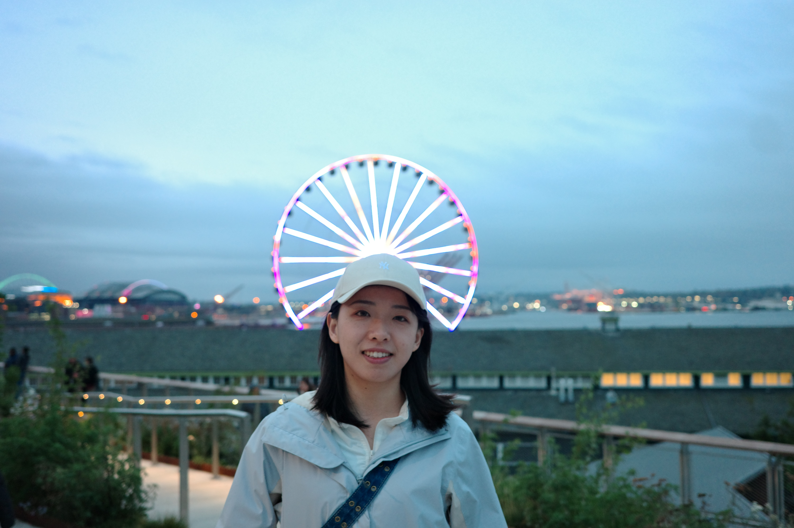

Contact Information
WeChat: +86 19159075726
Email: wlicw@connect.ust.hk
Office: Room 5067, LSK Business Building
Institution: HKUST Business School
Wenjuan LI 李文娟
Welcome to my website!
I am currently on the 2026–2027 academic job market.
I am a Postdoctoral Fellow in Operations Management at the Hong Kong University of Science and Technology (HKUST) Business School. I received my Ph.D. in Operations Management from HKUST in 2026, under the supervision of Dongwook Shin.
My research examines how AI, digital platforms, and content providers design information, content, and market mechanisms when consumers learn over time. I work at the intersection of operations management, information systems, and quantitative marketing, using analytical modeling, game theory, dynamic programming, and Bayesian persuasion.
Before my doctoral studies, I obtained a master's degree from Johns Hopkins Carey Business School and a bachelor's degree from the University of Science and Technology of China.